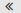

Primeros pasos
El interfaz de usuario incluye los siguientes componentes:
Una barra de menús en la parte superior.
En la parte izquierda, debajo de la barra de menús, se muestra la barra de búsqueda. Se puede activar y desactivar junto con el árbol de carpetas.
El Árbol de carpetas se puede activar en la parte izquierda.
En la parte derecha, bajo la barra de menús, se muestra una barra de herramientas. Contiene funciones específicas de la aplicación y otras funciones para seleccionar la vista del área de visualización.
El espacio restante se usa para el área de visualización.
Dependiendo de la acción ejecutada, la ventana emergente o el área de notificación se solaparán con el área de visualización.
El texto en el que se puede presionar se muestra en azul.
También puede usar el teclado para acceder a las funciones del interfaz de usuario.
Las siguientes capturas de pantalla muestran el interfaz de usuario, usando la aplicación Correo electrónico como ejemplo.
Barra de menús
Contiene los siguientes iconos y botones:
Botones para lanzar aplicaciones tales como Correo electrónico o Calendario
Dependiendo de la acción, se pueden mostrar botones adicionales. Por ejemplo, al redactar un nuevo correo electrónico o editar una cita.
Icono
 . El icono le notifica el número de elementos nuevos, por ejemplo correos electrónicos no leídos o invitaciones a citas programadas. Presionándolo se abre el área de notificación.
. El icono le notifica el número de elementos nuevos, por ejemplo correos electrónicos no leídos o invitaciones a citas programadas. Presionándolo se abre el área de notificación.Icono . Carga de nuevo los objetos del servidor. Con independencia de esta función, los objetos se actualizan a intervalos regulares.
-
El icono
 . Abre un menú con los siguientes elementos:
. Abre un menú con los siguientes elementos:Configuración. Abre una página que permite personalizar los ajustes.
Mis datos de contacto. Abre una ventana donde puede ajustar sus datos personales de contacto en la libreta de direcciones global.
Ayuda. Abre la ayuda en línea.
Pantalla completa. Cambia al modo de pantalla completa o vuelve al modo de ventana.
Salir. Le desconecta del software colaborativo.
Dependiendo de la configuración del software colaborativo, podrían estar disponibles otros elementos del menú.
Barra de búsqueda
Para mostrar la barra de búsqueda, presione en en la barra de funciones. Active . La barra de búsqueda está ubicada en la parte izquierda, debajo de la barra de menús. Contiene lo siguiente:
En cuanto se activa la búsqueda, el árbol de carpetas queda solapado por las funciones de búsqueda. El resultado de la búsqueda puede verse en la lista que se muestra en el área de visualización. Para finalizar la búsqueda, presione en .
Barra de herramientas
La barra de herramientas se ubica bajo la barra de menús. Contiene las siguientes funciones:
-
Botones para crear objetos nuevos, por ejemplo un nuevo correo electrónico o un contacto nuevo.
Si no tiene permisos para crear objetos en la carpeta actual, el botón está desactivado.
Botones o iconos para editar objetos.
Dependiendo de la aplicación, podrían estar disponibles otros botones específicos de la aplicación o iconos.
Icono Más
 . Contiene funciones específicas de la aplicación para organizar objetos.
. Contiene funciones específicas de la aplicación para organizar objetos.Botón Vista. Contiene funciones para controlar la presentación del área de visualización y para abrir o cerrar el árbol de carpetas.
Árbol de carpetas
Para mostrar el árbol de carpetas, presione sobre en la barra de funciones. Marque . Se muestra la siguiente información en el árbol de carpetas:
las carpetas específicas de la aplicación
-
dependiendo de la aplicación, secciones de carpetas personales, públicas y compartidas
Nota: Dependiendo de la configuración del software colaborativo, esas secciones podrían no mostrarse si no hay ninguna carpeta pública o compartida.
-
El icono
 que hay junto a la carpeta seleccionada. Contiene funciones para organizar carpetas. Dependiendo de la carpeta, puede haber más funciones disponibles.
que hay junto a la carpeta seleccionada. Contiene funciones para organizar carpetas. Dependiendo de la carpeta, puede haber más funciones disponibles.Consejo:También puede acceder a las acciones específicas de carpetas presionando con el botón derecho del ratón en una carpeta.
Dependiendo de la aplicación, otras funciones pueden estar disponibles.
El icono o el icono  de la parte inferior izquierda, abren o cierran el árbol de carpetas.
Área de visualización
Dependiendo de la aplicación y la vista seleccionada, el área de visualización incluye los siguientes componentes.
Una lista de objetos o una vista de iconos de los objetos de la carpeta seleccionada. En la parte superior de la lista, se muestran controles para seleccionar u ordenar objetos.
La vista de detalle del objeto que haya seleccionado en la lista.
Puede cambiar la vista del área de visualización usando el botón de la barra de herramientas. Al presionar en un objeto del área de visualización se abre una ventana emergente.
Ventana emergente
Muestra información detallada sobre un objeto mostrado en el área de visualización. Para abrir la ventana emergente, presione en un objeto del software colaborativo en el área de visualización. Si se lee un correo electrónico en el área de visualización y se presiona en el nombre del remitente, se muestran los siguientes elementos en la ventana emergente:
botones para determinadas acciones, por ejemplo copiar los datos de contacto del remitente a una carpeta.
los datos de contacto del remitente
información relevante, por ejemplo sus citas compartidas o su conversación por correo con el remitente
los datos de dicha persona en redes sociales como Xing o LinkedIn. Se pueden usar los botones disponibles para abrir el perfil de esa persona.
Aquellos datos relacionados con la persona se denominan vista halo. Si se presiona en un elemento determinado de la ventana emergente, podría abrirse una ventana emergente adicional. Para cerrar una de estas ventanas emergentes, presione en en la parte superior derecha. Para cerrar todas las ventanas emergentes presione en .
Área de notificación
Muestra información sobre los siguientes objetos:
correos electrónicos no leídos
nuevas invitaciones a citas
tareas en cola
tareas con fecha de vencimiento pasada
Para abrir el área de notificación, presione el icono  de la parte derecha de la barra de menús. Puede hacer lo siguiente:
de la parte derecha de la barra de menús. Puede hacer lo siguiente:
Para cerrar el área de notificación, presione el icono de nuevo.